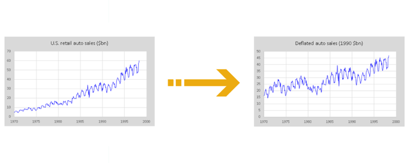

What is Seasonal Adjustment?
Seasonal adjustments allow for a dataset to remove predictable seasonal patterns.
What is the Business Challenge?
Many datasets will have varying fluctuations in response to different seasons, business cycles, or time periods. These fluctuations make it harder to analyze true trends happening in the data, as many values are being altered by arbitrary fluctuations not important to the data.
What is Seasonal Adjustment?
Seasonal adjustment is the process of finding and removing predictable seasonal patterns from a dataset. This provides a cleaner insight into the importance of the dataset and allows for more accurate information through statistical analysis. There are a multitude of ways to remove seasonal biasing from a dataset, such as multiplicative adjustment, in which a value is divided out from every datapoint. An example of multiplicative adjustment is inflation rate, which can be seen in the figure below.

How will Ready Signal Help?
Ready Signal allows you to change your signal to automatically apply seasonal adjustments to your data. With one click of a button, a signal can be automatically calculating and incorporating seasonal adjustments into the data stream.
Nau, Robert. Seasonal Adjustment of Data for Regression and Forecasting, Fuqua School of Business, people.duke.edu/~rnau/411seas.htm.
“What Is Seasonal Adjustment?” U.S. Bureau of Labor Statistics, U.S. Bureau of Labor Statistics, 16 Oct. 2001, www.bls.gov/cps/seasfaq.htm.